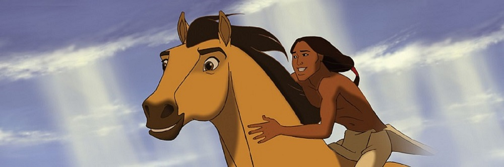

About Spirit the Stallion
Spirit was selected as a young colt born to a stallion and mare who were captured from the Kiger Herd Management Area in Oregon because of his beautiful conformation, wide-set eyes, and thick wavy multi-colored mane and tail.
Spirit with the indian guy
Characteristics of Spirit the Stallion
- fun-loving
- fiery-spirited
- the leader of his herd
Friends of Spirit the Stallion
Spirit friends are the female horse that he loves, the indian boy and his herd.